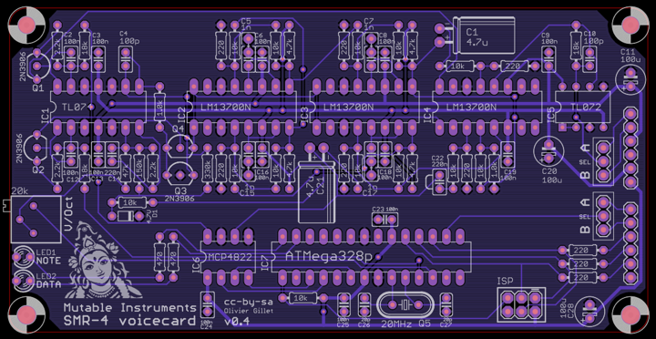

These voicecards can synthesize one voice of sound, using a hybrid synthesis engine derived from the Shruthi and three different flavors of analog filters (2-pole multimode SVF ; 4-pole OTA-C ; and 4-pole VC integrator based on a SSM2164).
You can listen to a comparison of those (in order: SMR4, SVF LP, SVF BP, SVF HP, 4P).
General comments
The following observations apply to all the voicecards
Layer jumpers
A voicecard can either be inserted into the Ambika motherboard ; or stacked on top of another voicecard. In the former case, the two jumpers must be set to the A position. In the later case, the two jumpers must be set to the B position.
The first jumper determines where the voicecard is sending its audio signal. You might exploit this to route the two voicecards in the stack to the same individual audio output (passive mixing), though this is not recommended.
The second jumper is used to assign a unique CS line to each voicecard. When the master MCU wants to talk to a voicecard, for example to make it play a note, it sets the CS (chip select) line of the voicecard to a voltage of 0V. It is thus very important that no two voicecards are addressed through the same CS line! For this reason, check and double check that the two voicecards in the stack have their second jumper set to A and B respectively.
Board layout
The lower part of the board is the digital section, containing an ATmega-328p MCU responsible for the sound and control signal generation, and a MCP4822 dual DAC converting the oscillators and VCA CVs into analog signals. VCF and resonance CVs are generated directly by the ATMega328p using PWM.
The upper part is the analog filter and VCA - emplying a different circuit for each voicecard in this family.
Board assembly
Work in the following order:
- Resistors and diodes
- Ceramic capacitors, crystal
- IC sockets, LEDs, trimmer
- Film and electrolytic capacitors
- ISP connector
And finally, solder the pair of 6x1 header for board stacking.

Do not trim the leads of the board stacking connectors. You might have gotten this habit if you have built Shruthi-1s... Don't do it! The voicecard is stacked on top of the motherboard, so the 6 leads of the 1x6 connectors should be kept. This is the same stacking approach as the Arduino "shields".
Keep in mind that the boards are spaced by 12mm vertically. This might be of importance if you use styroflex caps on the SVF or 4P boards - you have to make sure that their leads won't touch the board above it.
VCF tuning
All boards have a V/Oct trimmer to tune to a correct musical scale the tone emitted by the filter when it reaches self-oscillation. To do this adjustment, start from a blank patch. It greatly helps to assign the voicecard being tuned (and no other voicecard) to part 1. Set all oscillators to none, kill all modulations on the filter cutoff -- env2> and lfo2> modulation amounts to 0 -- and set cutoff and resonance to 63. You should hear the self-oscillation tone. Adjust the V/Oct trimmer so that the intervals are respected – that is to say, when you play C3 then C4, you should hear two notes, maybe not C3s and C4s, but they must be one octave apart. If you do not have a good sense of pitch, you can try a software tuner like Tuna Pitch on OS X. If the filter is correctly tuned, you should be able to play the filter "self oscillation tone" across roughly 4 octaves with correct tuning. Note that tuning might vary a bit with temperature, so there is no need to spend too much time on this!
As far as the digital oscillators are concerned, they are always in tune and do not need any calibration!
Parts sourcing
Each board has 3 low-profile 100uF capacitors that serve as local bypassing of the +5V, +8V and -8V rails. Panasonic makes some which are easy to find. Check the dimensions carefully when ordering from other sources. 10mm is the maximum allowed height.
The connector used for stacking the voicecards is often labelled as an "Arduino stackable header" or "Arduino shield header". This is the part you need, though it is often sold at exorbitant prices for what it is.
Schematics and PCB
SVF voicecard
This filter circuit is documented here. A digitally controlled SPQT switch (half 4052) commutes the 3 modes (LP, HP and BP).
\
The schematics in PDF format are available here.
You can find the Eagle files for this board in the source code hosted on github.
If you need a reference during assembly, you can download this printout of the top side of the board and print it at a 2:1 scale.
- The DAC output goes straight to an SSM2164 expo gain cell. This does not mean that the VCA has an exponential response. It is linearized in software. This costs a bit of resolution.
- C19 smoothes the filter CV. A value of 68nF is recommended. The original design (hence the silkscreen on the board) used 33nF which gives snappier, "clickier" filter envelopes.
I usually build this board in 4 steps - one with resistors, one with ceramic capacitors, one with IC sockets, and one with everything else!
\ \ \
SMR4 voicecard
This filter uses the same topology as the SMR4mkII, with the following change: OTA / op-amp integrator cells are replaced by OTA-C-Darlington buffer cells. This saves a quad op-amp which wouldn't have fit on the board. The difference can be heard when increasing the resonance.
\

The schematics in PDF format are available here.
You can find the Eagle files for this board in the source code hosted on github.
If you need a reference during assembly, you can download this printout of the top side of the board and print it at a 2:1 scale.
4P voicecard
This filter uses the same core as the 4-Pole Mission Shruthi-1 filter board, but only provides the LP4 output.
\
The schematics in PDF format are available here.
You can find the Eagle files for this board in the source code hosted on github.
If you need a reference during assembly, you can download this printout of the top side of the board and print it at a 2:1 scale.
License
These circuits and PCB layouts are made available under a cc-by-sa-3.0 license.